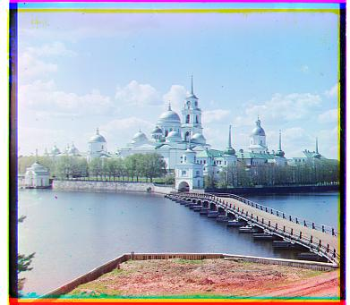
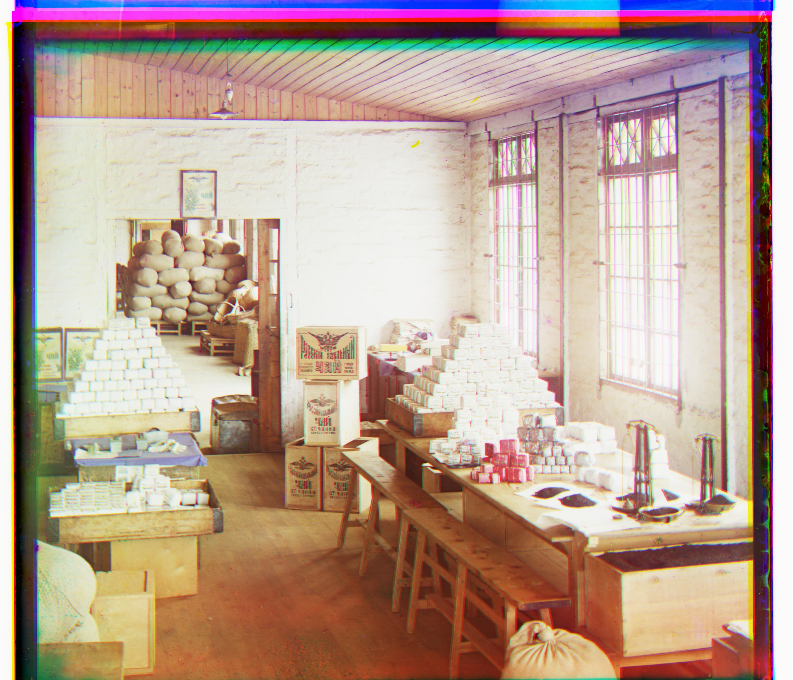
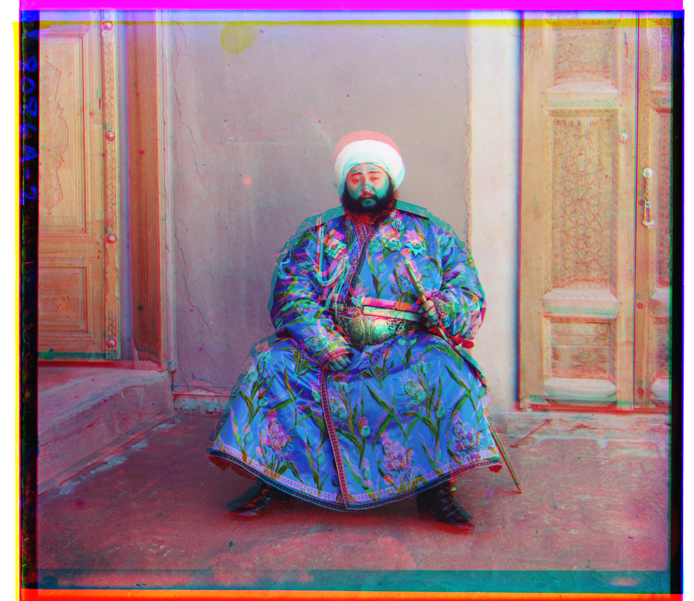
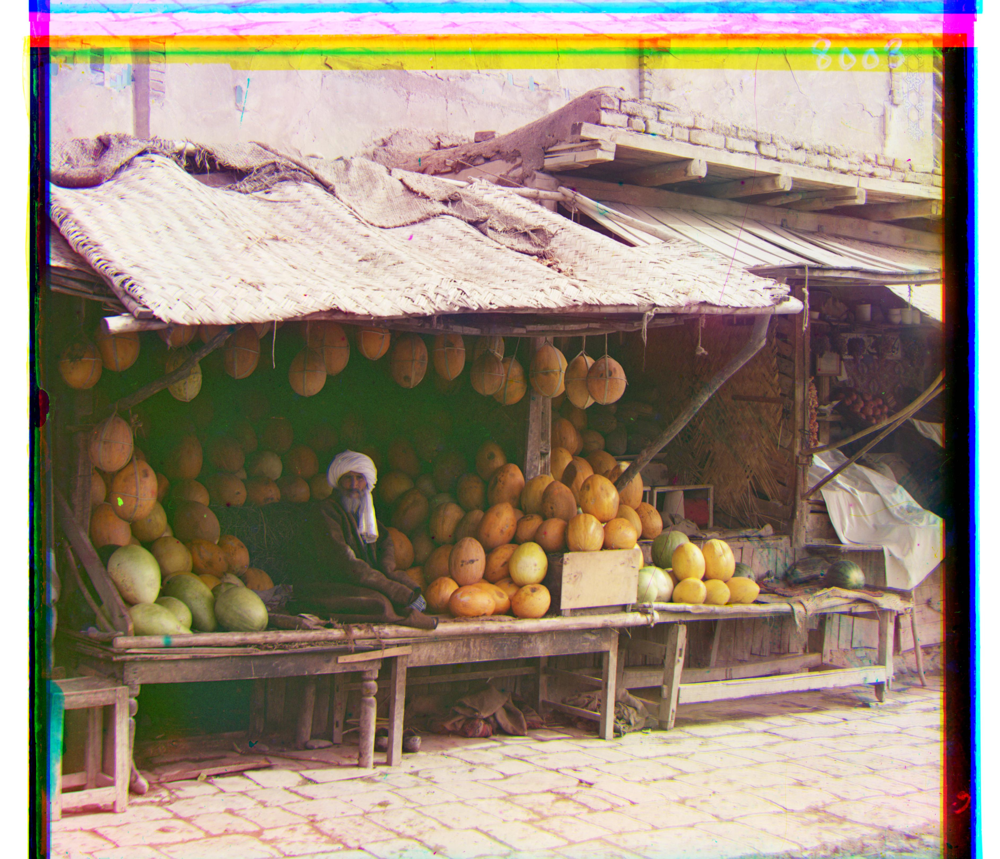
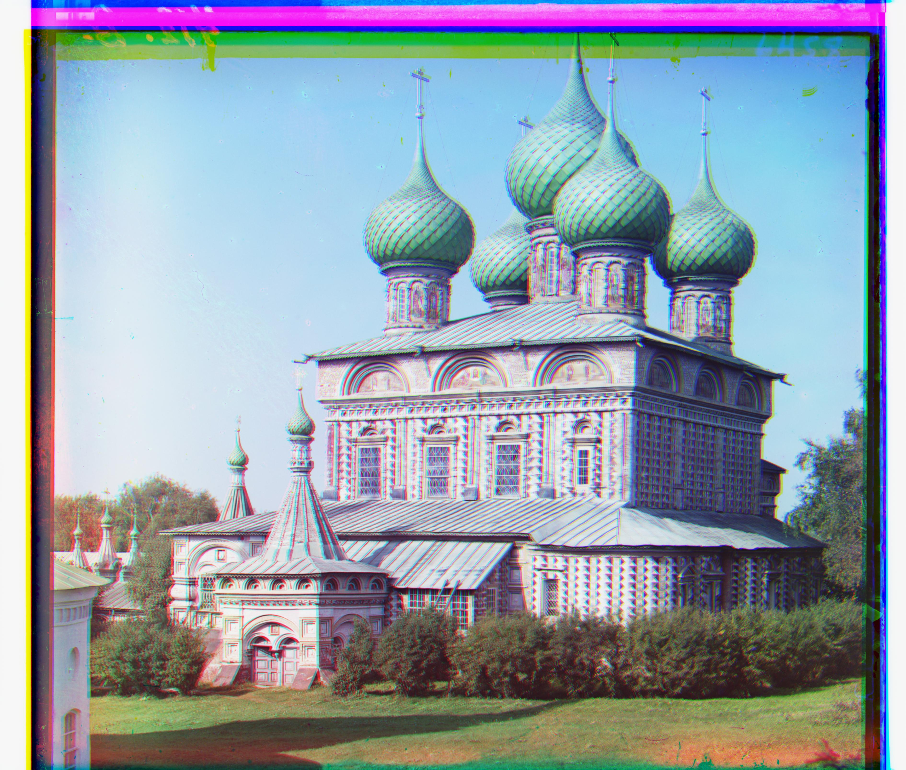
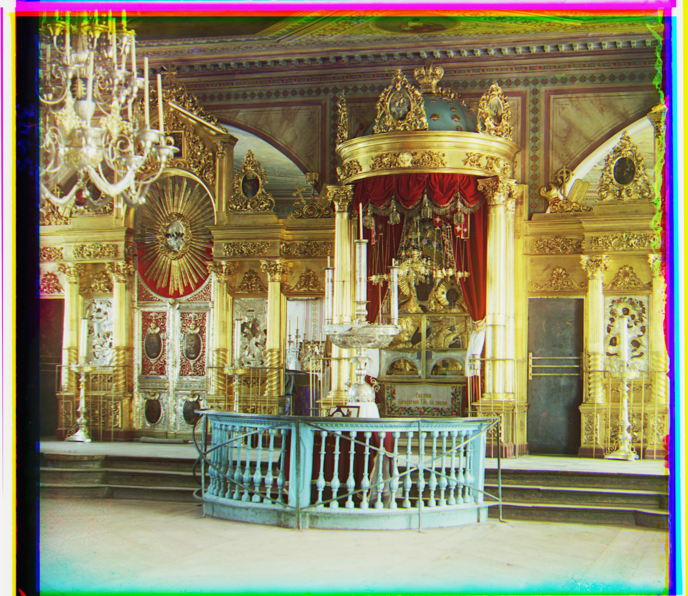
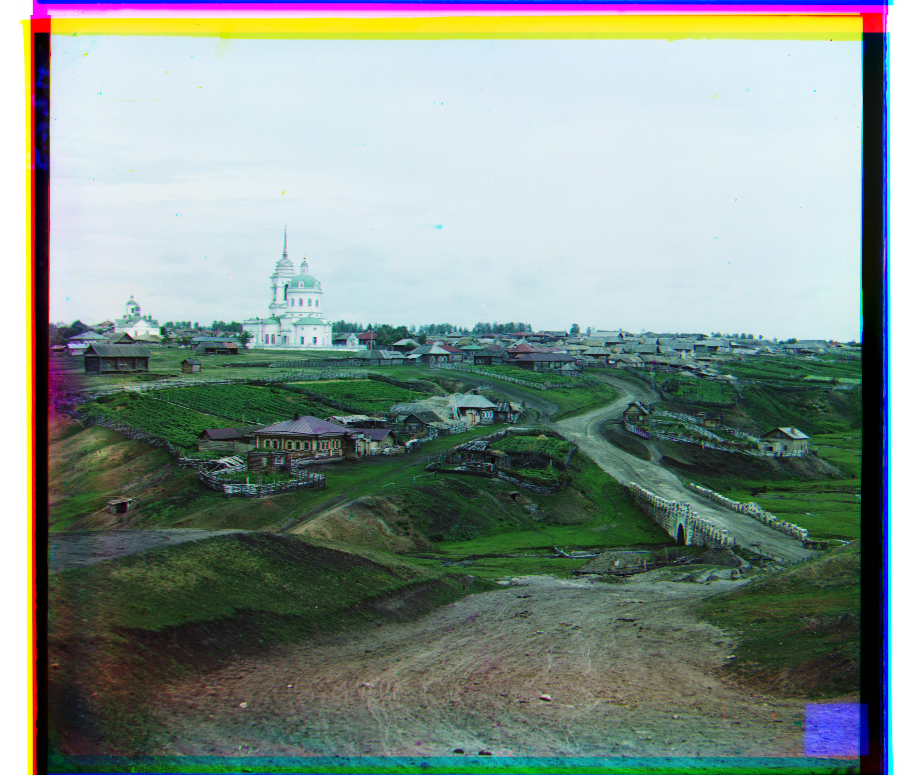
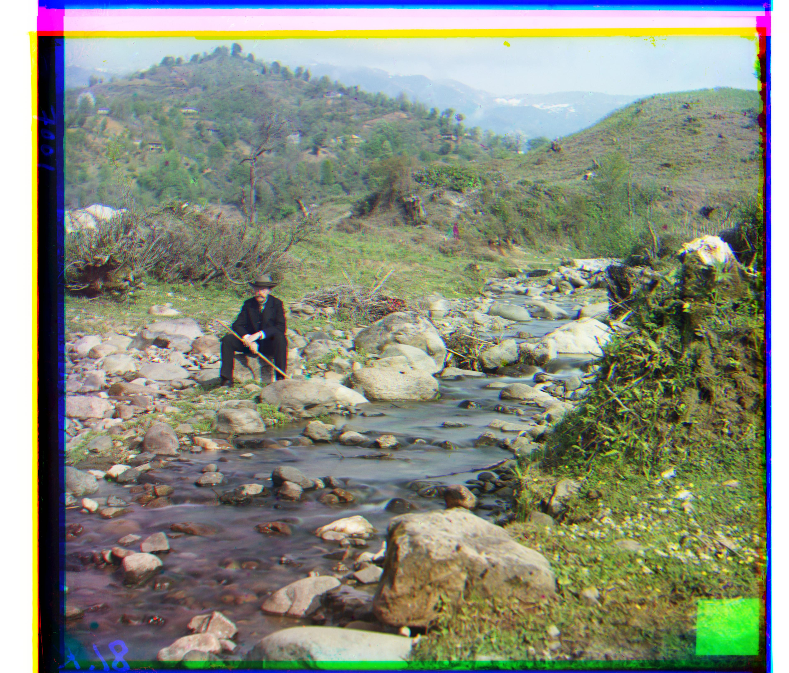
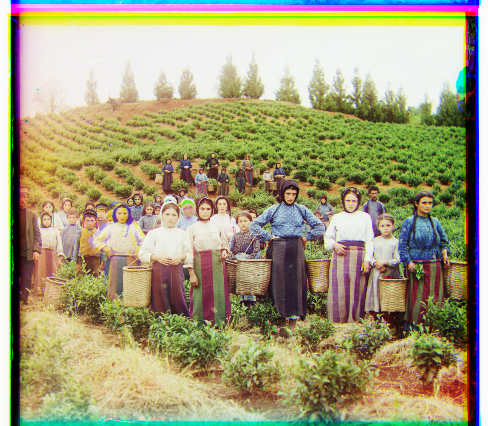
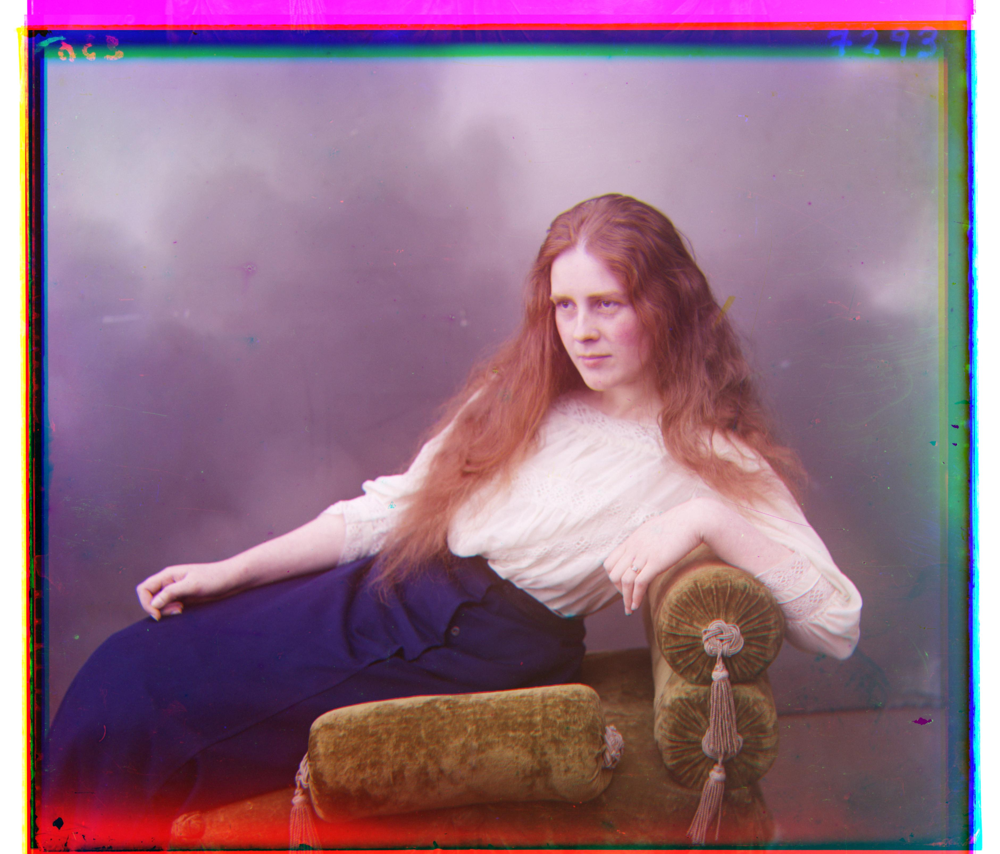

Project 1: Colorizing the Prokudin-Gorskii photo collection
Intro
The goal is to recreate colored images by aligning three glass plates negatives, which are grayscale images taken in three channels, Blue, Green, and Red separately.
Approach
In order to reconstruct the most vivid colored images, I implement the Sum of Squared Difference (SSD) algorithm. The blue image is used as the base, and the other two channels(Green & Red) move within the range of
(-15, 15) displacement. After the sum of square differences between corresponding pixels are calculated, I find the least sum of differences of two images. Because the displacement causes some mismatch at edges, which influences the sum, I crop 20% from each side during calculation to keep the result clean.
Furthermore, because the .tif images are substantially larger than .jpg ones, special treatments are required to ensure a decent runtime. The images are downscaled by a factor of 2 in each recursive iteration. At the coarsest level, the native algorithm was executed. After the initial offsets are found, a small range is searched near the offset at the large scale image. Runtime for smaller images is around half a second, while it takes around 40 seconds to finish the estimation for the larger ones.
Imperfection
Most of the results resemble the expected colored images pretty well, only the emir.tif image shows a substantial distortion. The problem seem to be one of the channel has a much higher brightness intensity (presumably the red image), so that the algorithm does not present a good result. One possible fix is to have some filtering algorithm to identify the edges of significant figures, so that light intensity will weigh less.
Outcome
"monastery.jpg"
"G:(2, -3) R:(2, 3)"
|

|
"cathedral.jpg"
"G:(2, 5) R:(3, 12)"
|

|
"tobolsk.jpg"
"G:(3, 3) R:(3, 7)"
|

|
"workshop.tif"
"G:(-1, 53) R:(-7, 105)"
|

|
"emir.tif"
"G:(19, 48) R:(25, 55)"
|

|
"three_generations.tif"
"G:(14, 52) R:(12, 111)"
|

|
"melons.tif"
"G:(10, 81) R:(14, 178)"
|

|
"onion_church.tif"
"G:(21, 52) R:(23, 109)"
|

|
"train.tif"
"G:(6, 42) R:(22, 86)"
|

|
"icon.tif"
"G:(16, 40) R:(18, 89)"
|

|
"village.tif"
"G:(12, 64) R:(18, 137)"
|

|
"self_portrait.tif"
"G:(21, 77) R:(23, 174)"
|

|
"harvesters.tif"
"G:(16, 59) R:(14, 123)"
|

|
"lady.tif"
"G:(8, 55) R:(12, 113)"
|

|